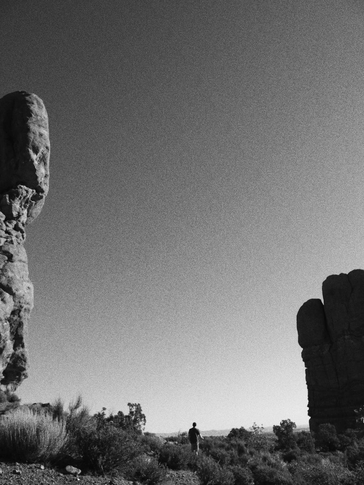
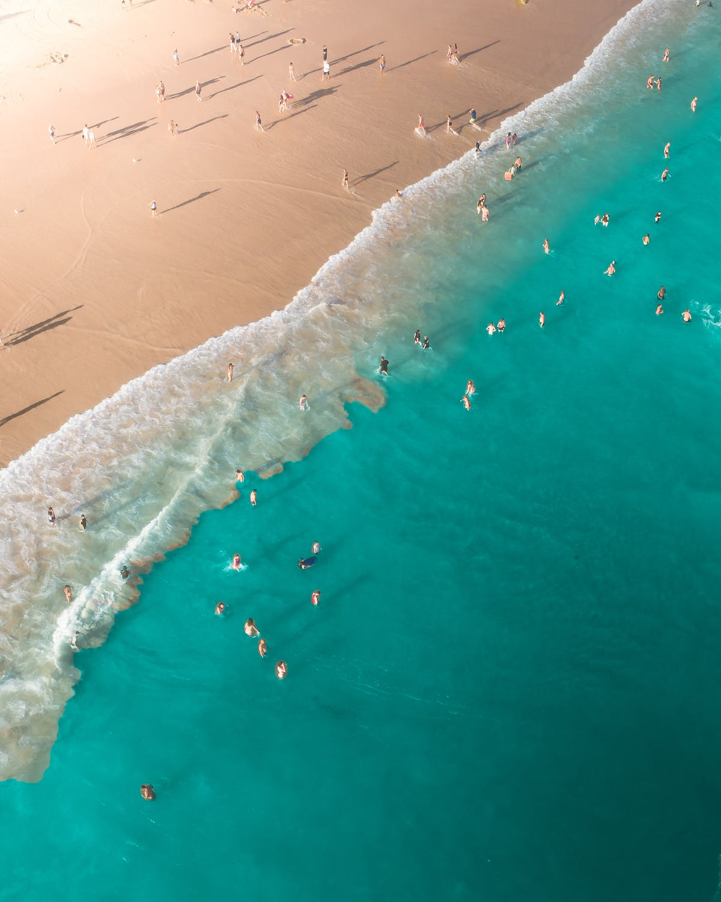
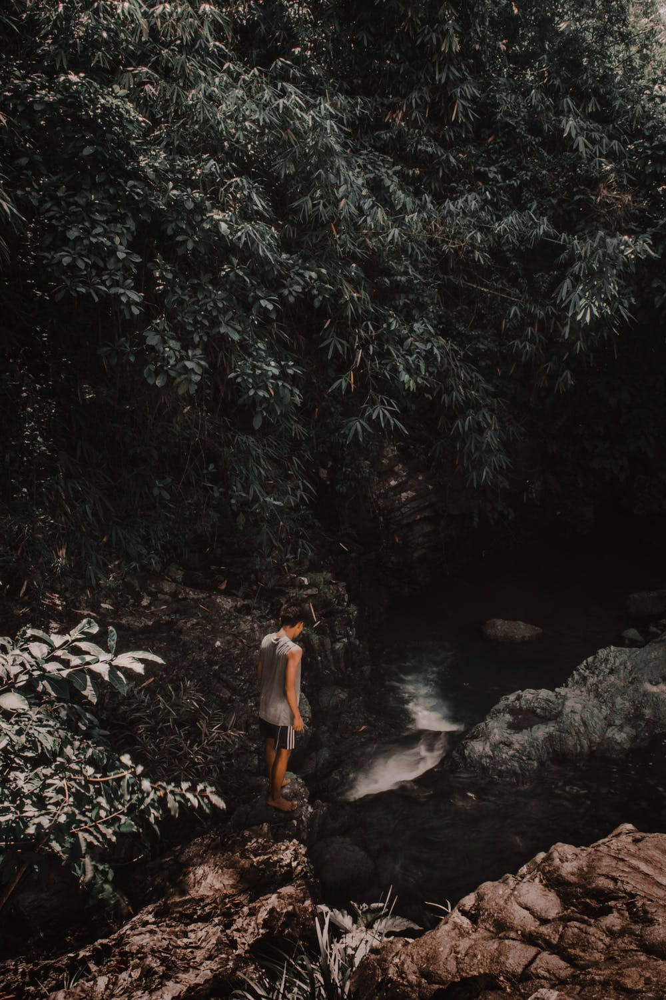
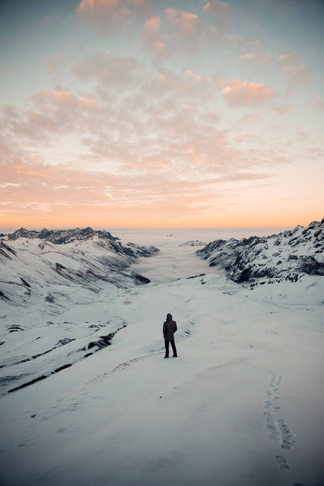

Many people are mistaken in thinking that travel photography is just about traveling and making photos. While, although that sounds like a dream job, not many people will pay you to just travel and take nice looking photos. Like any job, travel photography is work – and usually, it’s very demanding.
Yes, you get to go to amazing places, meet exciting people, and the world is your office. But, it also has many downsides: sleeping in flea-infested guesthouses, never-ending bus rides from hell, harassment from corrupted policemen, loneliness, and lack of job stability to name a few.
Are you still here? Good! Let’s talk about how to become a travel photographer. There are two ways to approach this: finding a client, or finding a job that allows you travel.
As a travel photographer, you have many potential clients. Here I will discuss the most common: Governmental tourism organizations, NGOs, Commercial organizations and Media.
Many governments strive to promote tourism in their countries. To do so, they need photographs to show the things and activities tourists can see and do in their country. Budget-wise, they have usually deep pockets.
These days digital platforms and websites are the leading source of information for most people.
These days digital platforms and websites are the leading source of information for most people.
As traveling for free and shooting tourist destinations is a dream job for almost anyone, the fees offered for the job can be quite low. It’s common the photographer only gets paid with benefits like free flights or accommodation.
If you are a top notch, worldwide known photographer, it is very likely that customers from all over the world will want to use your services (for fashion, events, sports, architecture, products etc.). But as we are focusing on travel photography, commercial organizations that deal with traveling and tourism are more likely to hire you. Notable examples are hotels, tour companies, airlines and so on.
Is your nine-to-five desk job boring you? Do you hate reporting to a boss? Is Peter in accounting really grinding your gears? It is a dream of many to leave their day jobs and get paid to travel the world, but is it really thateasy? With a little bit of planning and the mindset of an entrepreneur, you too can make travel photography a viable lifestyle. However, there are a couple of things you must realize right off the bat.
Right now there is no us, I’m running the show alone. So every feedback you provide, any suggestions you have and any new idea you like to share — please don’t hesitate, write to me immediately.
I’m a social animal. Animal because I’ve some degree of randomness in my behaviour. Social because I love to hear and share with people.
While I’m on many social platforms — for photography and portrait of humans let’s connect over my email (traveler@gmail.com) and Instagram.